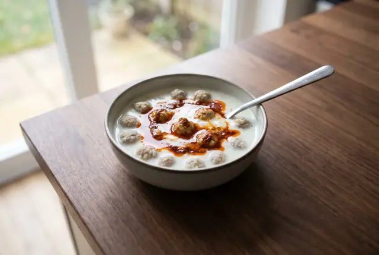
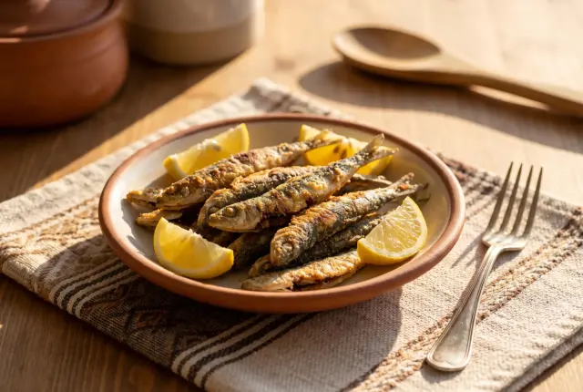
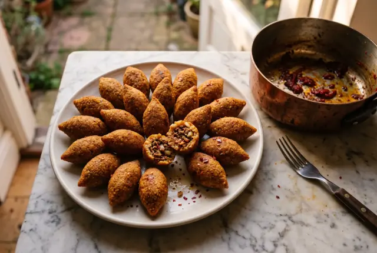
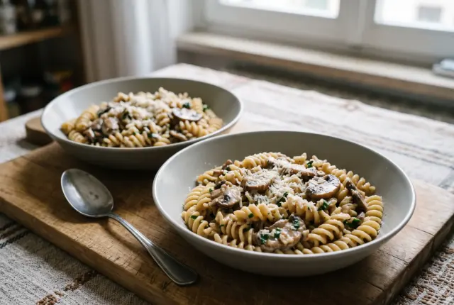
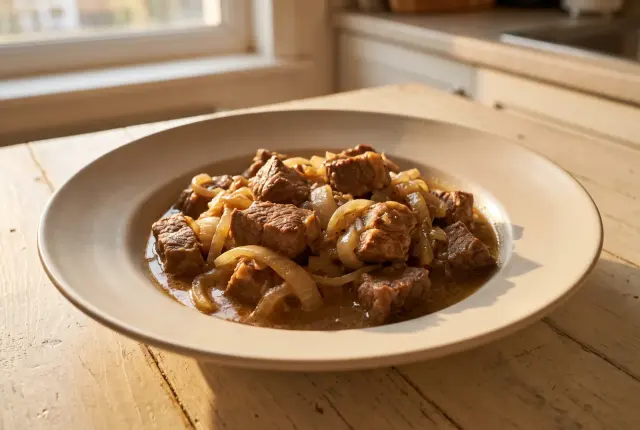
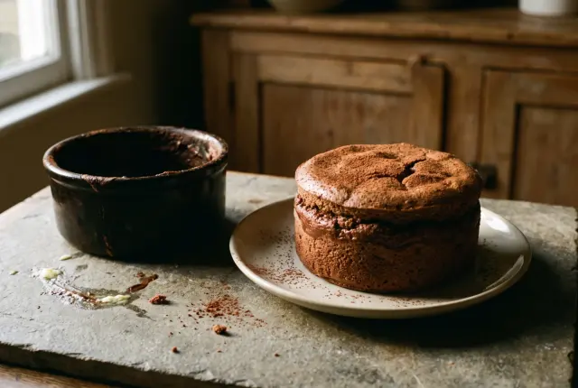
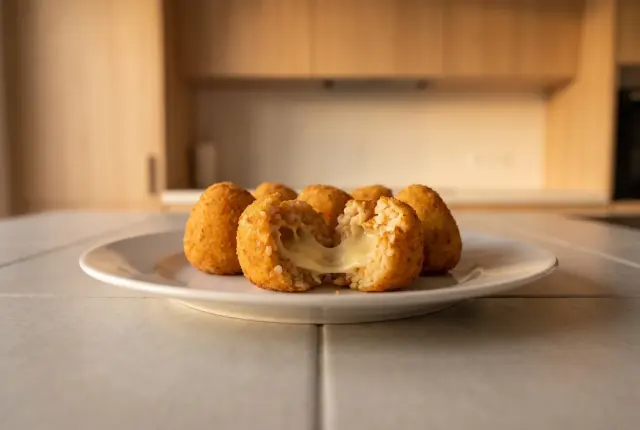
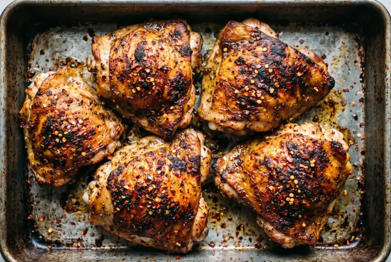

10:42
Bölüm 1
Karadeniz Yaylalarından Hakiki Kuymak
Tereyağında kavrulan mısır unu, eriyip ipek gibi uzayan peynir ve sabır. Yaylanın kahvaltısı, adım adım.
Bölümler sırayla birbirinin üstüne kurulur; her bölümün yazılı tarifi ve malzemeleri izleme sayfasında.
Tereyağında kavrulan mısır unu, eriyip ipek gibi uzayan peynir ve sabır. Yaylanın kahvaltısı, adım adım.

Nohut büyüklüğünde köfteler, kesilmeyen yoğurt ve nane yağı: Antep mutfağının bayram çorbası.
Hangi peynir uzar, tereyağı ne zaman eklenir: kuymağın Trabzon'daki kardeşi mıhlama, bakır sahanda.

Kasım hamsinin en lezzetli ayı. Temizlemek, mısır ununa bulamak ve tavada yelpaze dizmek.

Bulguru dinlendirmek, uzun uzun yoğurmak ve parmakla incecik açmak: Güneydoğu'nun sabır işi.

Yatay 16:9Minimum ekipman ve bulaşık; çalışanlara ve öğrencilere yönelik pratik, yüksek lezzetli kurtarıcı menüler.

Yatay 16:9Mutfak teknikleri, doğru bıçak kullanımı, emülsiyon sos bağlama ve profesyonel gastronomi sırları.

Pro · Yatay 16:9Ünlü restoranların menülerinde yer alan kült reçetelerin ev ortamında birebir uygulanabilir formülleri.

Dikey 9:16ASMR sesleri, mikro kesmeler, hızlı montaj ve anında uygulanabilir pratik püf noktaları.

Yatay 16:9Airfryer, döküm tava ve mutfak aletlerinin performans karşılaştırmaları; sponsorluğa hazır yapı.
Prototip sürümü: V1 · V2